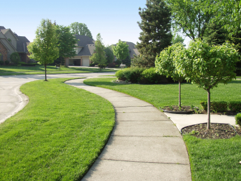
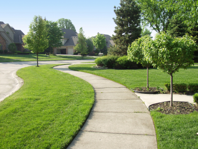
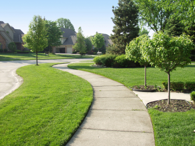

 
Lawnmowing: Lawn care technicians will mow lawns using electric lawn mower because it’s environment friendly. Our technicians will make sure the job is done right the first time. Lawn mowing will cost $40/application.
Mulching- Mulching- Lawn care technicians will apply mulch on resident’s lawn when needed. Mulching will be offered from March-October and will cost $400/application.
Dethatching/Core Aeration/Overseeding- Dethatching, Core Aeration, and Overseeding can be a package deal. This provides the advantage of getting all three done at the same time. Dethatching cost is $85/application, Core Aeration Cost is $75/application, and Overseeding is $145/application.
Pest Control- Technicians perform Integrated Pest Management using mechanic and organic control. The cost for Pest Management is $150/application.
Leaf Removal: Lawn care technicians will remove leaves using environment friendly equipment. Leaf Removal will cost $300/application.
Snow Removal- Our technician removes snow using environment friendly electric snow blowers. The cost is $65/application.